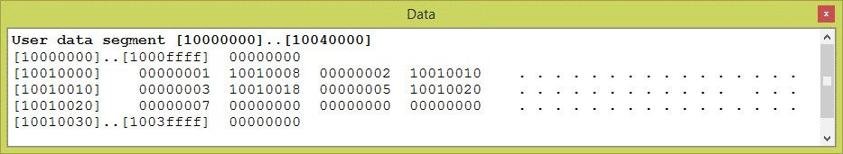

Yes. The new arrangement of memory implements the logical structure of the linked list, although now the nodes are not sequential in memory.
Here is the code fragment (again). Notice how the address is put into the link field of each node by using the symbolic address of the node's successor.
.data
elmnt01: .word 1
.word elmnt02
elmnt02: .word 2
.word elmnt03
elmnt03: .word 3
.word elmnt04
elmnt04: .word 5
.word elmnt05
elmnt05: .word 7
.word 0
And here is how it is assembled by SPIM:
Each node consists of two words of data: the integer followed by the address of the next node. In this memory dump the nodes follow each other in order.
At what address is the first node in the linked list?
What is the address in its link field?
What is the address of the second node in the linked list?